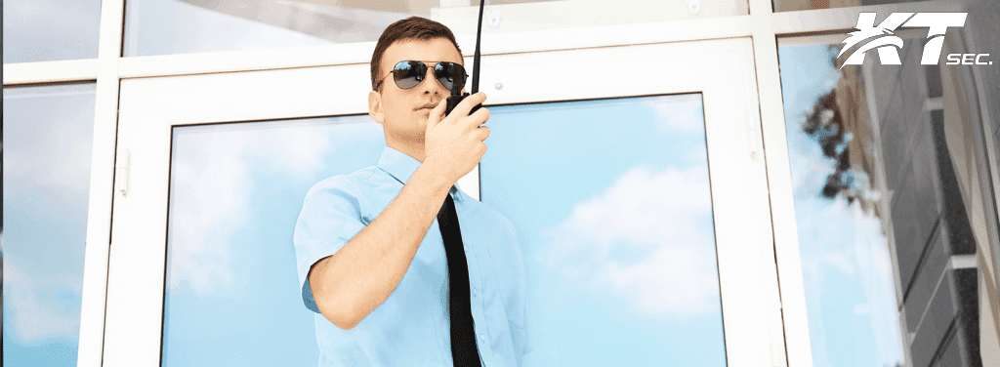

Cégünk tulajdonosai közel 20 éve meghatározó szereplői a vagyonvédelmi piacnak, így különösen a retail szegmensnek. Több olyan szisztéma és eljárás bevezetése fűződik a nevükhöz, melyek később a szakmában széles körben elterjedtek, bizonyítva ezzel hasznosságukat.
Cégünk struktúrája alapjaiban a Megbízók maximális kiszolgálásának igényével és figyelembevételével került kialakításra. Filozófiánk, hogy csak az elégedett ügyfélnek lehetünk hosszútávú partnerei. Ennek egyik alapköve a Megbízókkal történő direkt, folyamatos kapcsolattartás, melynek segítségével a megrendelői igényekre, kérésekre azonnal reagálni és haladéktalanul intézkedni tudunk.
A fentiekben részletezett ügyfélközpontúsággal elértük, hogy ügyfélelégedettségi mutatónk messze piaci átlag feletti.
Szolgáltatásain olyan mélységű bizalmi szolgáltatások, amelyek már túlléptek a szimpla megrendelő - szolgáltató fogalmán. Ma már olyan komplex szolgáltatási köröket (pl.: Bíróság és más hatóságok előtti képviselet) takarnak, melyek a hatékony, összehangolt kihasználtságuknak köszönhetően jelentős terhet vesznek le a megrendelő válláról.
A minőségi munkavégzés biztosítéka, hogy szolgáltatásainkat rendszeresen ellenőrizzük, cégünknél külön ellenőrzési csoport működik. Tevékenységünk megfelel az ISO 9001 : 2009 minőségirányítási rendszer előírásainak.
Az általunk alkalmazott szabványok garantálják, hogy a munkafolyamatok nyomonkövethetősége, illetve szabályozottsága biztosított legyen.
Vezető beosztású munkatársaink közül sokan rendőri, szakmai múlttal, illetve kivétel nélkül felsőfokú végzettséggel rendelkeznek. Szakmai múltjuk során megszerzett tapasztalatuk is garanciája a cégünknél működő rendnek, fegyelemnek, határozottságnak, szakmai hozzáértésnek.
Cégfilozófiánk másik fontos alappillére a folyamatos fejlődés, mely a vezetői és a végrehajtói állomány tekintetében többek között képzések rendszerességét jelenti. Ezen képzések során általános és speciális, elméleti és gyakorlati, szituációs oktatásokra kerül sor.
Szolgáltatásainkra - 100.000.000.- Ft éves összegű - érvényes szakmai felelősség biztosítással rendelkezünk. Megrendelői igény esetén, cégünk felelősség biztosítását a kívánt értékre módosítjuk.
Cégünk irányítása során, legfontosabb feladatunknak, a szakmai munka kiemelten magas szintű végrehajtását, illetve a megrendelői igények kifogástalan teljesítését tekintjük.
Az KT Sec. Kft. vezetősége